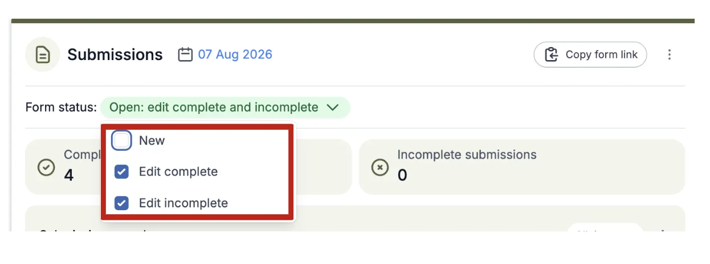

Running a sequential Multi-stage event
SubmissionsMulti-stage add-onLast reviewed 28 July 2026
For event organisersNot an organiser?
Multi -stage abstract submission can be used for parallel stages (eg. Clinical and Practice) or sequential. This article provides guidance on how to manage the sequential type of multi-stage submission.#
To add Multi-stage to your event, contact sales@oxfordabstracts.com.
- Set up your stages and submission deadlines in the event details.
- Set up your submission and review forms.
- Open the call for abstracts on Stage 1.
- When you are finished, go through the review process for Stage 1.
- Make decisions on Stage 1, and move the successful submissions to Stage 2.
- Notify all rejected submitters from Stage 1. Those that have had their submissions moved to Stage 2 should be notified from Stage 2 and be asked to log in to their account, where they will see their submissions, now in the second stage.
- Stage 2 submitters can then amend their submission form by adding their full paper, and answer any additional questions. Ensure that you have set the questions that have already been answered in Stage 1, to hide or read-only if you do not want submitters to edit any of the prior responses.
- Set Stage 2 status to the following, to disallow any new submissions (the bottom two as per your requirements).

- When submissions are collected, you can then go through the reviewing and decision process on Stage 2.
Common questions#
I am running an event where abstracts are submitted, reviewed and decided upon. After that the submitters of accepted abstracts are asked to submit their full paper. How can I set this up?#
Multi-stage is ideal for this scenario or where a second stage review is required and you wish to retain not overtype the first stage submission or review data.
Didn't solve it? Ask our support team
No question is too small, and there's no charge for asking. Raise a ticket and someone who knows the software will pick it up.
Did this page solve it?
Thanks — this helps us fix it.